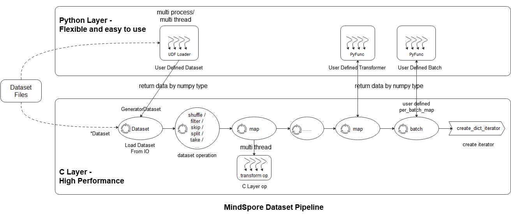

mindspore.dataset
This module provides APIs to load and process various common datasets such as MNIST, CIFAR-10, CIFAR-100, VOC, COCO, ImageNet, CelebA, CLUE, etc. It also supports datasets in standard format, including MindRecord, TFRecord, Manifest, etc. Users can also define their own datasets with this module.
Besides, this module provides APIs to sample data while loading.
We can enable cache in most of the dataset with its key arguments ‘cache’. Please notice that cache is not supported on Windows platform yet. Do not use it while loading and processing data on Windows. More introductions and limitations can refer Single-Node Tensor Cache .
Common imported modules in corresponding API examples are as follows:
import mindspore.dataset as ds
import mindspore.dataset.transforms as transforms
import mindspore.dataset.vision as vision
Descriptions of common dataset terms are as follows:
Dataset, the base class of all the datasets. It provides data processing methods to help preprocess the data.
SourceDataset, an abstract class to represent the source of dataset pipeline which produces data from data sources such as files and databases.
MappableDataset, an abstract class to represent a source dataset which supports for random access.
Iterator, the base class of dataset iterator for enumerating elements.
Introduction to data processing pipeline
As shown in the above figure, the mindspore dataset module makes it easy for users to define data preprocessing pipelines and transform samples in the dataset in the most efficient (multi-process / multi-thread) manner. The specific steps are as follows:
Loading datasets: Users can easily load supported datasets using the *Dataset class, or load Python layer customized datasets through UDF Loader + GeneratorDataset . At the same time, the loading class method can accept a variety of parameters such as sampler, data slicing, and data shuffle;
Dataset operation: The user uses the dataset object method .shuffle / .filter / .skip / .split / .take / … to further shuffle, filter, skip, and obtain the maximum number of samples of datasets;
Dataset sample transform operation: The user can add data transform operations ( vision transform , NLP transform , audio transform ) to the map operation to perform transformations. During data preprocessing, multiple map operations can be defined to perform different transform operations to different fields. The data transform operation can also be a user-defined transform pyfunc (Python function);
Batch: After the transformation of the samples, the user can use the batch operation to organize multiple samples into batches, or use self-defined batch logic with the parameter per_batch_map applied;
Iterator: Finally, the user can use the dataset object method create_dict_iterator to create an iterator, which can output the preprocessed data cyclically.
The data processing pipeline example is as follows. Please refer to datasets_example.py for complete example.
import numpy as np
import mindspore as ms
import mindspore.dataset as ds
import mindspore.dataset.vision as vision
import mindspore.dataset.transforms as transforms
# construct data and label
data1 = np.array(np.random.sample(size=(300, 300, 3)) * 255, dtype=np.uint8)
data2 = np.array(np.random.sample(size=(300, 300, 3)) * 255, dtype=np.uint8)
data3 = np.array(np.random.sample(size=(300, 300, 3)) * 255, dtype=np.uint8)
data4 = np.array(np.random.sample(size=(300, 300, 3)) * 255, dtype=np.uint8)
label = [1, 2, 3, 4]
# load the data and label by NumpySlicesDataset
dataset = ds.NumpySlicesDataset(([data1, data2, data3, data4], label), ["data", "label"])
# apply the transform to data
dataset = dataset.map(operations=vision.RandomCrop(size=(250, 250)), input_columns="data")
dataset = dataset.map(operations=vision.Resize(size=(224, 224)), input_columns="data")
dataset = dataset.map(operations=vision.Normalize(mean=[0.485 * 255, 0.456 * 255, 0.406 * 255],
std=[0.229 * 255, 0.224 * 255, 0.225 * 255]),
input_columns="data")
dataset = dataset.map(operations=vision.HWC2CHW(), input_columns="data")
# apply the transform to label
dataset = dataset.map(operations=transforms.TypeCast(ms.int32), input_columns="label")
# batch
dataset = dataset.batch(batch_size=2)
# create iterator
epochs = 2
ds_iter = dataset.create_dict_iterator(output_numpy=True, num_epochs=epochs)
for _ in range(epochs):
for item in ds_iter:
print("item: {}".format(item), flush=True)
Vision
Caltech 101 dataset. |
|
Caltech 256 dataset. |
|
CelebA(CelebFaces Attributes) dataset. |
|
CIFAR-10 dataset. |
|
CIFAR-100 dataset. |
|
Cityscapes dataset. |
|
COCO(Common Objects in Context) dataset. |
|
DIV2K(DIVerse 2K resolution image) dataset. |
|
EMNIST(Extended MNIST) dataset. |
|
A source dataset for generating fake images. |
|
Fashion-MNIST dataset. |
|
Flickr8k and Flickr30k datasets. |
|
Oxfird 102 Flower dataset. |
|
Food101 dataset. |
|
A source dataset that reads images from a tree of directories. |
|
KITTI dataset. |
|
KMNIST(Kuzushiji-MNIST) dataset. |
|
LFW(Labeled Faces in the Wild) dataset. |
|
LSUN(Large-scale Scene UNderstarding) dataset. |
|
A source dataset for reading images from a Manifest file. |
|
MNIST dataset. |
|
Omniglot dataset. |
|
PhotoTour dataset. |
|
Places365 dataset. |
|
QMNIST dataset. |
|
RenderedSST2(Rendered Stanford Sentiment Treebank v2) dataset. |
|
SB(Semantic Boundaries) Dataset. |
|
SBU(SBU Captioned Photo) dataset. |
|
Semeion dataset. |
|
STL-10 dataset. |
|
SUN397(Scene UNderstanding) dataset. |
|
SVHN(Street View House Numbers) dataset. |
|
USPS(U.S. |
|
VOC(Visual Object Classes) dataset. |
|
WIDERFace dataset. |
Text
AG News dataset. |
|
Amazon Review Polarity and Amazon Review Full datasets. |
|
CLUE(Chinese Language Understanding Evaluation) dataset. |
|
CoNLL-2000(Conference on Computational Natural Language Learning) chunking dataset. |
|
DBpedia dataset. |
|
EnWik9 dataset. |
|
IMDb(Internet Movie Database) dataset. |
|
IWSLT2016(International Workshop on Spoken Language Translation) dataset. |
|
IWSLT2017(International Workshop on Spoken Language Translation) dataset. |
|
Multi30k dataset. |
|
PennTreebank dataset. |
|
Sogou News dataset. |
|
SQuAD 1.1 and SQuAD 2.0 datasets. |
|
SST2(Stanford Sentiment Treebank v2) dataset. |
|
A source dataset that reads and parses datasets stored on disk in text format. |
|
UDPOS(Universal Dependencies dataset for Part of Speech) dataset. |
|
WikiText2 and WikiText103 datasets. |
|
YahooAnswers dataset. |
|
Yelp Review Polarity and Yelp Review Full datasets. |
Audio
CMU Arctic dataset. |
|
GTZAN dataset. |
|
LibriTTS dataset. |
|
LJSpeech dataset. |
|
Speech Commands dataset. |
|
Tedlium dataset. |
|
YesNo dataset. |
Standard Format
A source dataset that reads and parses comma-separated values (CSV) files as dataset. |
|
A source dataset that reads and parses MindRecord dataset. |
|
A source dataset that reads and parses MindRecord dataset which stored in cloud storage such as OBS, Minio or AWS S3. |
|
A source dataset that reads and parses datasets stored on disk in TFData format. |
User Defined
A source dataset that generates data from Python by invoking Python data source each epoch. |
|
Creates a dataset with given data slices, mainly for loading Python data into dataset. |
|
Creates a dataset with filler data provided by user. |
|
A source dataset that generates random data. |
Graph
Load argoverse dataset and create graph. |
|
A graph object for storing Graph structure and feature data, and provide capabilities such as graph sampling. |
|
Reads the graph dataset used for GNN training from the shared file and database. |
|
Basic Dataset for loading graph into memory. |
Sampler
A sampler that accesses a shard of the dataset, it helps divide dataset into multi-subset for distributed training. |
|
Samples K elements for each P class in the dataset. |
|
Samples the elements randomly. |
|
Samples the dataset elements sequentially that is equivalent to not using a sampler. |
|
Samples the elements randomly from a sequence of indices. |
|
Samples the elements from a sequence of indices. |
|
Samples the elements from [0, len(weights) - 1] randomly with the given weights (probabilities). |
Config
The configuration module provides various functions to set and get the supported configuration parameters, and read a configuration file.
Set the default sending batches when training with sink_mode=True in Ascend device. |
|
Load the project configuration from the file. |
|
Set the seed so the random generated number will be fixed for deterministic results. |
|
Get random number seed. |
|
Set the queue capacity of the thread in pipeline. |
|
Get the prefetch size as for number of rows. |
|
Set a new global configuration default value for the number of parallel workers. |
|
Get the global configuration of number of parallel workers. |
|
Set the default state of numa enabled. |
|
Get the state of numa to indicate enabled/disabled. |
|
Set the default interval (in milliseconds) for monitor sampling. |
|
Get the global configuration of sampling interval of performance monitor. |
|
Set the default timeout (in seconds) for |
|
Get the default timeout for |
|
Set num_parallel_workers for each op automatically(This feature is turned off by default). |
|
Get the setting (turned on or off) automatic number of workers. |
|
Set the default state of shared memory flag. |
|
Get the default state of shared mem enabled variable. |
|
Set whether to enable AutoTune. |
|
Get whether AutoTune is currently enabled. |
|
Set the configuration adjustment interval (in steps) for AutoTune. |
|
Get the current configuration adjustment interval (in steps) for AutoTune. |
|
Set the automatic offload flag of the dataset. |
|
Get the state of the automatic offload flag (True or False) |
|
Set the default state of watchdog Python thread as enabled, the default state of watchdog Python thread is enabled. |
|
Get the state of watchdog Python thread to indicate enabled or disabled state. |
|
Set whether dataset pipeline should recover in fast mode during failover (In fast mode, random augmentations may not get same results as before the failure occurred). |
|
Get whether the fast recovery mode is enabled for the current dataset pipeline. |
|
|
Set the default interval (in seconds) for multiprocessing/multithreading timeout when main process/thread gets data from subprocesses/child threads. |
|
Get the global configuration of multiprocessing/multithreading timeout when main process/thread gets data from subprocesses/child threads. |
Set the method in which erroneous samples should be processed in a dataset pipeline. |
|
Get the current configuration for strategy for processing erroneous samples in a dataset pipeline. |
|
An enumeration for error_samples_mode . |
Others
Only the batch size function and per_batch_map of the batch operation can dynamically adjust parameters based on the number of batches and epochs during training. |
|
A client to interface with tensor caching service. |
|
Abstract base class used to build dataset callback classes. |
|
Specifies the sampling strategy when execute get_sampled_neighbors . |
|
Class to represent a schema of a dataset. |
|
Specify the shuffle mode. |
|
Abstract base class used to build dataset callback classes that are synchronized with the training callback class mindspore.train.Callback . |
|
Specifies the output storage format when execute get_all_neighbors . |
|
Compare if two dataset pipelines are the same. |
|
Construct dataset pipeline from a JSON file produced by dataset serialize function. |
|
Serialize dataset pipeline into a JSON file. |
|
Write the dataset pipeline graph to logger.info file. |
|
Wait util the dataset files required by all devices are downloaded. |
|
Draw an image with given bboxes and class labels (with scores). |